发布规划AI 眉题
周五前上线发布计划。
斜体衬线负责人、依赖与决策，一屏尽览。
AI 米色
把 AI slop 变成你乐于上线的界面。Impeccable 赋予你的智能体设计专业能力：从零构建、改进现有页面、忠实遵循你的设计系统。

真 TM 好用，效果漂亮极了。
Impeccable > Claude 设计
卸载你正在用的前端技能，换成 Impeccable。
Impeccable 是最被低估的工具，能把设计思维融进编码工作流。
每当有人问我前端设计，我总会推荐 @impeccable_ai 插件。我对设计非常挑剔，它已经成为我日常工具链的一部分。
这大概才是 Figma Make 该有的样子。
Impeccable 无疑是现有最好的 UI 设计技能。我每天都在用，也推荐给了别人。干得漂亮！💪
它把我交付复杂而精美设计的能力提到了新层次。
Impeccable 是我今年用过最好的技能，不敢相信它居然免费。
Impeccable 真的太棒了，我爱它。
谁要说 Impeccable 半句坏话，把名字告诉我，我去找他理论。
我试过很多增强 AI 美感的 UI 设计工具，这是我用过最好、最惊艳的一个。
老哥，你这风格也太炸裂了
@impeccable_ai 真的很棒，这是我第一次真切感受到 AI 带来 10 倍生产力提升。而且我可是什么工具都要试一遍的人。
今天才知道 Impeccable 是你做的。我得谢谢你带来了差不多 3 个客户转化，感谢这么棒的工具。
用 @conductor_build 和 @impeccable_ai 两小时就上线了一个落地页。从想法到上线，比大多数人挑个字体还快 ;))
对，就是这个。这玩意儿真管用。
在我看来，这是有史以来最好的插件。
Claude 技能大多名不副实，这几个是少见的真正有用的。
这居然是免费的？？🔥🔥
@impeccable_ai 竟然免费，简直离谱。它替代了一批付费产品，还比它们更好。
从原型到生产，@impeccable_ai 在每个层面都帮了大忙，实实在在提升了我们的水准。想不出有什么开箱即用的东西能取代它。
Impeccable 是我现在用过最好的前端设计技能，把同类选项甩出几条街。
太惊人了。开发者和设计师的工作流正在快速变化，而且越变越好。
最近用这个技能做我的个人作品集，直接被惊艳到。在 Claude Code 上迭代了好几轮，几乎没碰 Figma。
这玩意儿 🔥。我的落地页之前一眼就是 vibe coding，现在看起来相当体面了，过程也很有趣。
很高兴我们再也不用碰 Figma 了。直接用 @paper 加 Impeccable 的 Claude 技能跑 8 个智能体。
Impeccable 是个特别出色的技能，我每天都要用上好几次，效果天差地别。
用更好的 UI、UX 和品牌感升级了一个内部工具，减少了 AI slop。这也为项目本身立下了标准。
真的太好用了。
这是我唯一用过觉得真有价值的智能体技能集，感谢做了这个东西。
描述你想要什么，设计专业能力由 Impeccable 提供。
/impeccable typeset让文字更易读：标题更清晰、字号更合理、行长更舒适。
在下方选择命令。拖动滑杆对比效果。横向滚动浏览命令。拖动滑杆对比效果。
/impeccable polish 定价页。保留我们利落的直角和沉稳的配色。去掉那些 AI 痕迹。
我会在页面现有的设计系统内进行打磨，交还之前先跑一遍检测器。
↳DESIGN.md 已加载保留现有系统
发现 4 处 AI 痕迹AI 米色 · 斜体衬线 · 侧边页签 · 脉冲圆点
✓已写入源码0 条检测发现
/impeccable live
正在对运行中的应用启动 Live Mode。我会先打开页面，然后等待元素选取和整页定向。
Live 助手已启动选取器已注入应用
↳已打开 localhost:3000已连接生产源码
●等待输入选取元素，或为整页定向
探索经过人工审校的设计方向，每个方向都有自己的一套视觉规则。Impeccable 会把它们与从你的产品中提炼出的构想相互权衡，再围绕最契合的方向展开构建。
基于你现有的颜色、组件和规则来构建与精修。新页面就像同一个产品自然长出来的。
用一次说明讲清你的用户和他们的目标。Impeccable 会把这份上下文存进 PRODUCT.md，并在设计工作开始前读取。
/impeccable document 会把你的视觉系统记录到 DESIGN.md，随时供下一个功能或下一个智能体取用。
帮人在落地页上做决定，或在仪表盘里把事办成。Impeccable 为任务而设计。
设计钩子会检查 UI 改动，并把发现回传给你的智能体。它以纯代码运行，不需要 AI 模型或 API key。
Hero.tsxHero.tsx第二轮安装技能，打开自动设计检查，做出让自己骄傲的东西。
在你的项目文件夹中运行，然后按提示操作。
npx impeccable install在 ChatGPT 或 Codex 中，打开 Plugins 标签页并搜索 Impeccable。
打开它的详情，点 + 按钮安装。然后在你的项目里开一个新对话，继续第 2 步。
在 Claude Code 对话中，添加 marketplace：
/plugin marketplace add pbakaus/impeccable然后打开 /plugin，选择 Discover，安装 Impeccable。
在终端中运行：
npx skills add pbakaus/impeccable这会安装共享技能。想要针对你的编码工具定制的集成，请使用 CLI。
CLI 会让 Impeccable 适配你的编码工具。选择为当前项目还是所有项目安装。
GitHub Copilot 应用：Impeccable 已内置。在 Settings → Experimental 中启用即可。
之后可用 npx impeccable update 更新
在 ChatGPT 或 Codex 的 Plugins 标签页里管理 Impeccable。
用 npx skills update impeccable 更新 Impeccable
为你的智能体提供产品和设计方向的上下文，然后启用钩子，让它在工作时就能拦住设计问题。
运行下面的命令之后，还要完成你所用工具的钩子批准或工作区信任步骤，检查才能运行。
用的是 Codex？在应用中打开 Settings → Hooks，或在 CLI 里输入 /hooks。审查并信任 Impeccable 的 PostToolUse 与 Stop 钩子。在此之前它们不会运行。
重新加载你的编码工具。在智能体对话中运行：
/impeccable init/impeccable hooks on已经启用过？你的智能体会确认当前的设置。
Impeccable 还在不断进化。获取最新公告、更新，以及与你的智能体一起把设计做得更好的技巧。
设计经验、走查与技巧窍门，直达你的收件箱。
新版本发布、速览技巧，以及值得分享的作品。
给仓库点个 Star，支持这个项目，也方便随时找到它。
快速上手 · 用 Impeccable 做设计 · 命令参考 · 更新日志 · 常见问题